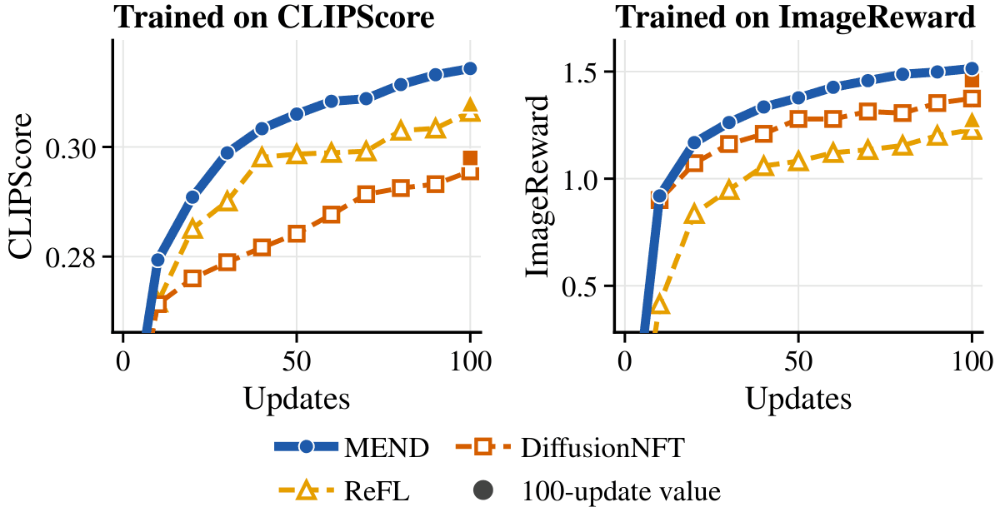
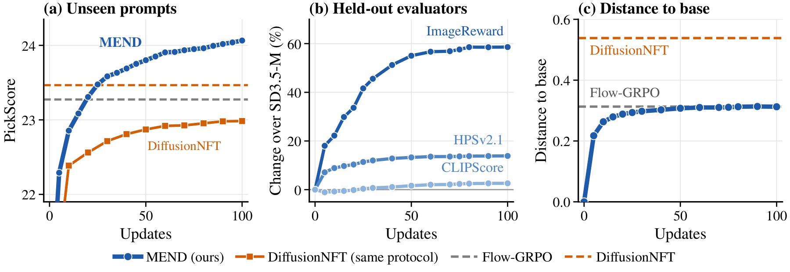
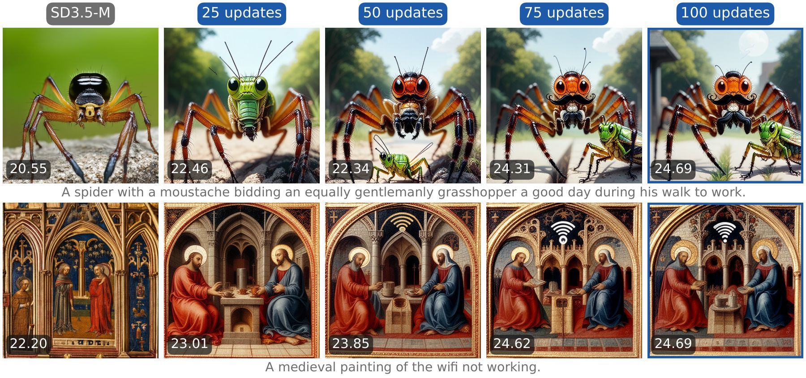
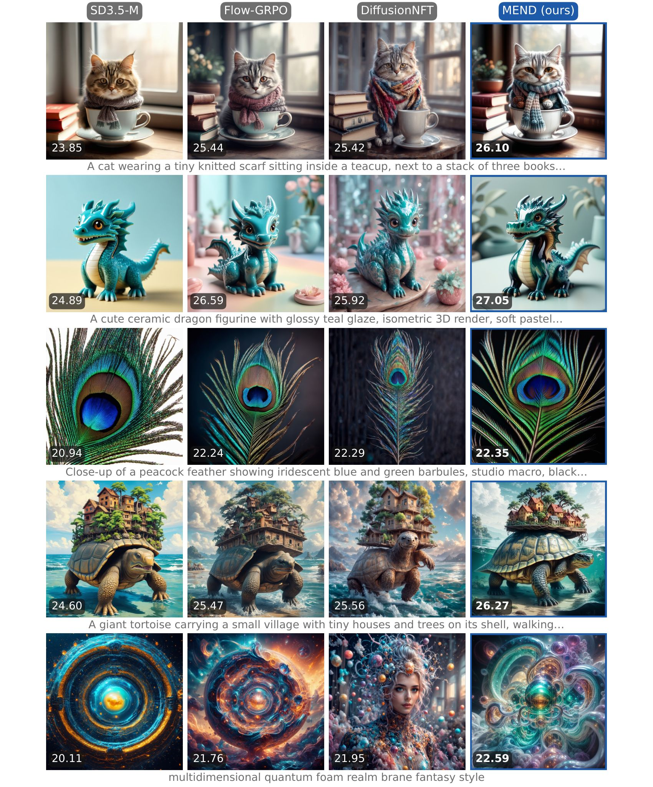
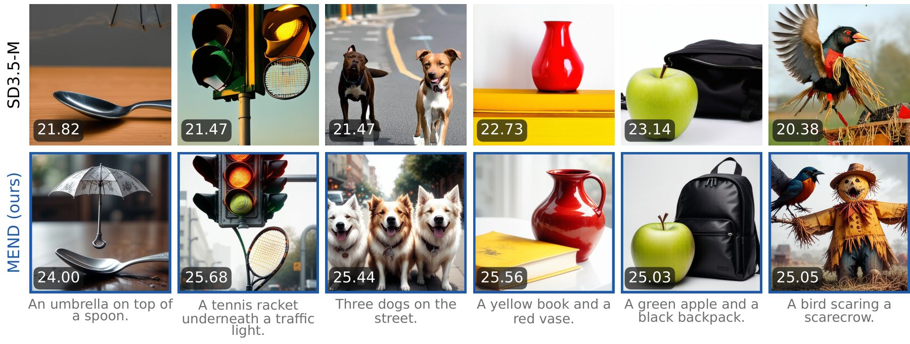
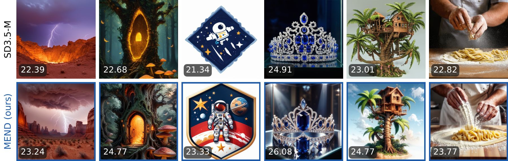

Abstract
Reward post-training of flow models either reweights the model's own samples under a KL penalty or a frozen reference, often for thousands of updates, or backpropagates the reward and moves every sample without checking that the move is worth its size. We introduce MEND, a reinforcement learning method built on proximal velocity matching. MEND caps rewards within each prompt group, so samples that already score well receive no move. Below the cap, it proposes moves along the reward gradient and accepts one only when its capped reward gain exceeds a quadratic displacement price. The model then regresses onto the resulting velocity targets, with no KL term, frozen reference model, or advantage weights. In 100 updates, MEND outperforms Flow-GRPO (about 4k updates) on five of six evaluators at the same distance to base-model images. Under an equal-budget protocol, it surpasses ReFL and DiffusionNFT at every evaluated update across four training rewards, reaching PickScore 24.03 versus 23.92 and 23.43, respectively. A 300-update three-reward run also surpasses the five-reward DiffusionNFT model on all three rewards it trains on. MEND is general and easy to adopt: it applies to any flow backbone with a differentiable reward.
Motivation and background
Learned reward models such as PickScore, HPSv2.1 and ImageReward score an image for human preference. Reward post-training uses such a score to update a pretrained text-to-image flow model. The open problem is how to turn a scalar score into an update that raises reward quickly without eroding what the base model already does well. A score alone does not say which samples should change or where they should go.
Existing methods fall into three families.
- Policy gradient. Flow-GRPO reweights stochastic trajectories by group-relative advantages under a KL penalty.
- Weighted regression. DiffusionNFT reweights the model's own samples inside a regression loss.
- Reward backpropagation. ReFL and DRaFT differentiate the reward through sampling, which supplies a direction.
The first two adjust how much existing samples count, and the Flow-GRPO and DiffusionNFT models we compare against use about 4k and 1.7k updates. Reward backpropagation moves every sample, including those that already score well, and nothing checks that a move earns its size. A KL penalty or reference term limits drift of the distribution as a whole. None of them decides, sample by sample, whether a change is worth making.

Objective components. The target check compares reward gain with displacement cost. MEND uses a lagged behavior adapter, not a frozen reference. Updates refer to the compared runs.
| Method | KL / frozen reference | Reward weights | Reward gradient | Target check | Updates |
|---|---|---|---|---|---|
| Flow-GRPO | yes | yes | no | no | ~4k |
| ReFL | no | no | yes | no | 100 |
| DiffusionNFT | yes | yes | no | no | 1.7k |
| MEND | no | no | yes | yes | 100 |
Method
MEND rests on one principle: a sample's target moves only when the reward it gains pays for the distance it travels. Each round applies this principle sample by sample to build targets, then fits them with a plain regression loss.

Two adapters share the base model: the trained adapter \(\theta\) and a behavior adapter \(\theta_{\mathrm{old}}\). For each prompt \(c\), the behavior adapter generates a group of \(G\) deterministic 10-step rollouts with endpoints \(x^{(1)},\ldots,x^{(G)}\) and a stored intermediate state \(z_q\) near \(t_q = 0.278\). \(R(x,c)\) scores the decoded latent and \(g=\nabla_x R(x,c)\) is its gradient.
- Cap. Pushing samples that already score well buys little reward and costs diversity. Within each prompt group, rewards are capped at the quantile \(q = 0.75\), subject to a global floor \(\kappa_{\mathrm{glob}}\) that rises slowly across rounds. Samples at or above the cap receive zero displacement.
\[ \kappa(c)=\max\Big\{Q_q\big(\{R(x^{(k)},c)\}_{k=1}^{G}\big),\;\kappa_{\mathrm{glob}}\Big\},\qquad R_\kappa(x,c)=\min\{R(x,c),\,\kappa(c)\} \]
- Propose. Each sample below the cap receives \(K=3\) proposals along its normalized reward gradient. Each is decoded and scored once, so the decision rests on the reward attained at \(y_j\), not on a first-order prediction of it.
\[ y_j = x + \eta_j\,\frac{g}{\lVert g\rVert},\qquad \eta_j\in\{0.1,\,0.2,\,0.4\} \]
- Verify. A proposal must pay for its length. The verdict selects the candidate with the highest capped reward minus a quadratic displacement price, and the unchanged sample is always among the candidates.
\[ y^{\star}=\arg\max_{y\in\{x,\,y_1,\ldots,y_K\}} J(y),\qquad J(y)=R_\kappa(y,c)-\frac{\lVert y-x\rVert^{2}}{2\tau} \]This is the proximal-point objective, maximized over a finite candidate set. The price \(\tau\) is fixed within a round and adjusted between rounds to target an acceptance rate of 30% to 60% among proposed samples.
- Regress. Let \(d=y^{\star}-x\) for accepted samples and \(d=0\) otherwise. At the stored state, the trained adapter matches the behavior prediction plus \(d\), with \(\lambda_{\mathrm{keep}}=10\).
\[ \mathcal L(\theta)=\mathbb E_{\mathrm{moved}}\big\lVert \hat x_\theta(z_q)-\operatorname{sg}[\hat x_{\mathrm{old}}(z_q)+d]\big\rVert^{2}+\lambda_{\mathrm{keep}}\,\mathbb E_{\mathrm{kept}}\big\lVert \hat x_\theta(z_q)-\operatorname{sg}[\hat x_{\mathrm{old}}(z_q)]\big\rVert^{2} \]A kept sample asks for no change and a moved sample asks for exactly the correction \(d\).
Since \(\hat x_\theta(z_q)=z_q-t_q\,v_\theta(z_q,t_q,c)\), each term of the loss is a velocity-matching loss:
Kept samples have \(v^{\star}=v_{\mathrm{old}}\). MEND is therefore velocity matching onto a target selected by the proximal rule, which is why we call it proximal velocity matching. The behavior adapter follows \(\theta\) by EMA, so the keep term anchors velocities to a lagged adapter that follows training, not to a frozen reference. Each round takes one AdamW step, and MEND never backpropagates through the sampler.
Theory
Verified target selection. Every accepted target improves capped reward by more than its quadratic price, and its displacement bound shrinks to zero as the sample approaches the cap:
First-order realization. At the behavior parameters, the descent direction of the regression loss backpropagates normalized reward gradients through the clean predictions of accepted samples only, scaled by their selected steps, so MEND keeps the direction of reward backpropagation and adds the two decisions it lacks: which samples move, and how far.
Results
What is compared. We train SD3.5-M on PickScore under the equal-budget protocol of Zhou et al. (2026): 48 Pick-a-Pic prompts × 24 images per update, rank-32 LoRA, 10-step rollouts at 512 pixels, and 100 updates. ReFL and DiffusionNFT are the baselines under this protocol. We also compare with the Flow-GRPO PickScore adapter (about 4k updates) and the five-reward DiffusionNFT model (1.7k updates). Evaluation uses DrawBench, 200 prompts × 5 seeds and 40 Euler steps, scored with six evaluators. Distance to base is the DreamSim distance to the base image generated with the same prompt, noise and sampling settings.
Main comparison
MEND outperforms Flow-GRPO on five of six evaluators at the same base distance. Its three-reward run surpasses DiffusionNFT on those three rewards. DrawBench 200 × 5. Bold: best; underline: second best.
| Method | Rewards | Updates | PickScore | HPSv2.1 | HPSv3 | ImageReward | CLIPScore | Aesthetic | Dist. to base ↓ |
|---|---|---|---|---|---|---|---|---|---|
| SD3.5-M | none | 0 | 22.35 | 0.280 | 2.72 | 0.83 | 0.283 | 5.39 | 0 |
| Flow-GRPO | PickScore | ~4k | 23.52 | 0.316 | 7.04 | 1.27 | 0.280 | 5.90 | 0.313 |
| DiffusionNFT | five | 1.7k | 23.82 | 0.331 | 7.50 | 1.49 | 0.292 | 6.02 | 0.538 |
| MEND (ours) | PickScore | 100 | 23.70 | 0.319 | 7.15 | 1.32 | 0.291 | 5.88 | 0.313 |
| MEND (ours) | three | 300 | 23.89 | 0.344 | 5.87 | 1.28 | 0.300 | 5.92 | 0.488 |
MEND outperforms Flow-GRPO on five of six evaluators at the same base distance (0.313), with roughly 40-fold fewer updates. Aesthetic score is the one evaluator on which Flow-GRPO is higher (5.90 versus 5.88). The run trained on PickScore, HPSv2.1 and CLIPScore surpasses DiffusionNFT (1.7k updates on five rewards) on those three evaluators at a smaller base distance. It is lower on HPSv3, ImageReward and aesthetic score, which it does not train on.
Equal budget, four training rewards
Each MEND run uses SD3.5-M, 100 updates and the equal-budget protocol; the base uses the same evaluation setting. The last two columns give ReFL and DiffusionNFT under this protocol on the row's training reward. Bold: MEND's trained metric; underline: second best among the three methods on that metric.
| Training reward | PickScore | HPSv2.1 | ImageReward | CLIPScore | ReFL | DiffusionNFT |
|---|---|---|---|---|---|---|
| none (SD3.5-M) | 20.58 | 0.207 | −0.52 | 0.239 | ||
| PickScore | 24.03 | 0.301 | 1.13 | 0.273 | 23.92 | 23.43 |
| ImageReward | 22.33 | 0.303 | 1.51 | 0.266 | 1.28 | 1.46 |
| HPSv2.1 | 23.06 | 0.360 | 1.21 | 0.268 | 0.358 | 0.336 |
| CLIPScore | 22.27 | 0.268 | 0.98 | 0.314 | 0.308 | 0.298 |
At equal budget, MEND is ahead of both baselines at every evaluated update. It reaches PickScore 24.03 at update 100, versus 23.92 for ReFL and 23.43 for DiffusionNFT. Separate runs trained on ImageReward, HPSv2.1 and CLIPScore are each above both baselines on their training reward at update 100 and at every evaluated update. All four runs finish above the base on every held-out evaluator.

Update efficiency and fidelity
On 64 unseen Pick-a-Pic prompts, MEND is above DiffusionNFT under the same protocol at every evaluated update. By update 25 it also surpasses the levels of Flow-GRPO and DiffusionNFT, which use about 4k and 1.7k updates. Reward keeps improving while base distance barely changes late in training: between updates 25 and 100, DrawBench PickScore rises from 23.36 to 23.70, while base distance moves only from 0.294 to 0.313. Training costs 10.0 GPU-hours on 3 GB200 GPUs, excluding evaluation.


Qualitative comparisons
In matched comparisons, MEND corrects prompt errors of the base while keeping its composition. All grids use matched prompts and initial noise, with PickScore on each tile. Many MEND examples have higher saturation, which reflects a preference of the reward.



Generality
MEND is not tied to one backbone. It applies to any flow model with a differentiable reward, and it improves every backbone we test at the same update budget. On SD3-M, PickScore training raises PickScore from 20.36 to 23.70, above Linear-DPO at 20.96, and held-out HPSv2.1 from 0.215 to 0.298. On Z-Image-Turbo, a distilled model sampled in nine steps at 1024 pixels, PickScore training raises PickScore from 22.86 to 24.10 and held-out HPSv2.1 from 0.295 to 0.315. HPSv2.1 training reaches 0.357 with held-out PickScore 23.27.
SD3-M. DrawBench 200 × 5, update 100.
| Model | PickScore | HPSv2.1 |
|---|---|---|
| SD3-M | 20.36 | 0.215 |
| Linear-DPO | 20.96 | 0.256 |
| MEND, PickScore | 23.70 | 0.298 |
Z-Image-Turbo. DrawBench 200 × 5, 1024 pixels, 9 steps.
| Model | PickScore | HPSv2.1 |
|---|---|---|
| Z-Image-Turbo | 22.86 | 0.295 |
| MEND, PickScore | 24.10 | 0.315 |
| MEND, HPSv2.1 | 23.27 | 0.357 |
Limitations. MEND requires a differentiable reward. Its guarantees hold for the targets of each round. Longer training can over-optimize a reward, and some single-reward runs lose held-out score within the 100-update budget.
BibTeX
@article{saini2026mend,
title = {MEND: RL for Flow Models via Proximal Velocity Matching},
author = {Saini, Shreshth and Birkbeck, Neil and Wang, Yilin and
Adsumilli, Balu and Bovik, Alan C.},
journal = {arXiv preprint},
year = {2026}
}